Chapter 5 Shrinkage Methods
5.1 Ridge and Lasso Regression
Performing Ridge Regression
To perform ridge regression, we use the package glmnet.
library(glmnet)Important Note: glmnet() uses different syntax than regsubsets().
Continuing example with Hitters data,
y = Hitters$Salary
# Here we exclude the first column because it corresponds to the intercept.
x = model.matrix(Salary ~ ., Hitters)[,-1]Note that model.matrix(Salary ~ ., Hitters)[,-1] is exactly the same as Hitters[,-19] (Salary has index 19), it just is all the data for the prediction variables.
Performing ridge regression just involves using the glmnet() function specifying alpha = 0 (for ridge).
ridge = glmnet(x, y, alpha = 0)To use a different number of \(\lambda\), change parameter nlambda which is 100 by default.
Extracting Information
names(ridge)## [1] "a0" "beta" "df" "dim" "lambda" "dev.ratio"
## [7] "nulldev" "npasses" "jerr" "offset" "call" "nobs"ridge$betacontains the values of the coefficients under each \(\lambda\) (useridge$beta[,1:3]to see first 3 for example).coef(ridge)contains exact same information asridge$betabut also includes intercept estimates.ridge$lambdacontains the grid of all \(\lambda\) values that were used.
5.1.1 Performing Lasso regression
Very similar to ridge but with alpha = 1 in glmnet(), which is the default so doesn’t need to be specified.
y = Hitters$Salary
x = model.matrix(Salary~., Hitters)[,-1]lasso = glmnet(x, y)Plotting Regularisation Paths
xvar = 'lambda' specifies to plot coefficient values against Log \(\lambda\), otherwise the default xvar is the \(L_1\) Norm. Below are two examples, it is the exact same method for ridge and lasso
Ridge Coefficients Against Log \(\lambda\)
plot(ridge, xvar = 'lambda')
Lasso Coefficients Against \(L_1\) Norm
plot(lasso)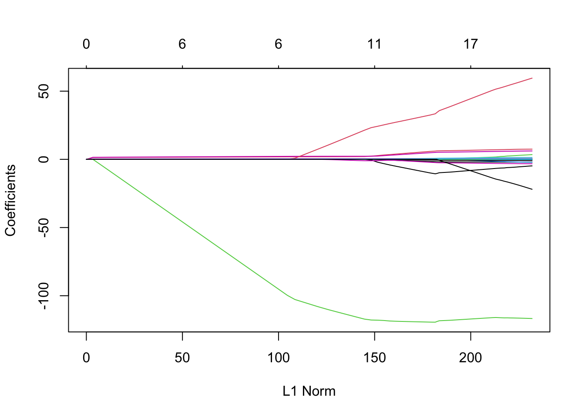
Cross-Validation
To find best \(\lambda\) with cross-validation, use cv.glmnet() instead.
ridge.cv = cv.glmnet(x, y, alpha=0)
names(ridge.cv)## [1] "lambda" "cvm" "cvsd" "cvup" "cvlo"
## [6] "nzero" "call" "name" "glmnet.fit" "lambda.min"
## [11] "lambda.1se" "index"ridge.cv$lambda.mingives the optimal \(\lambda\).ridge.cv$lambda.1segives the maximum \(\lambda\) 1 standard-error away from optimal lambda.
Plotting
In the plot below, the left dotted line highlights value of lambda.min and the right dotted line hightlights value of lambda.1se.
plot(ridge.cv)
abline( h = ridge.cv$cvup[ridge.cv$index[1]], lty = 4 )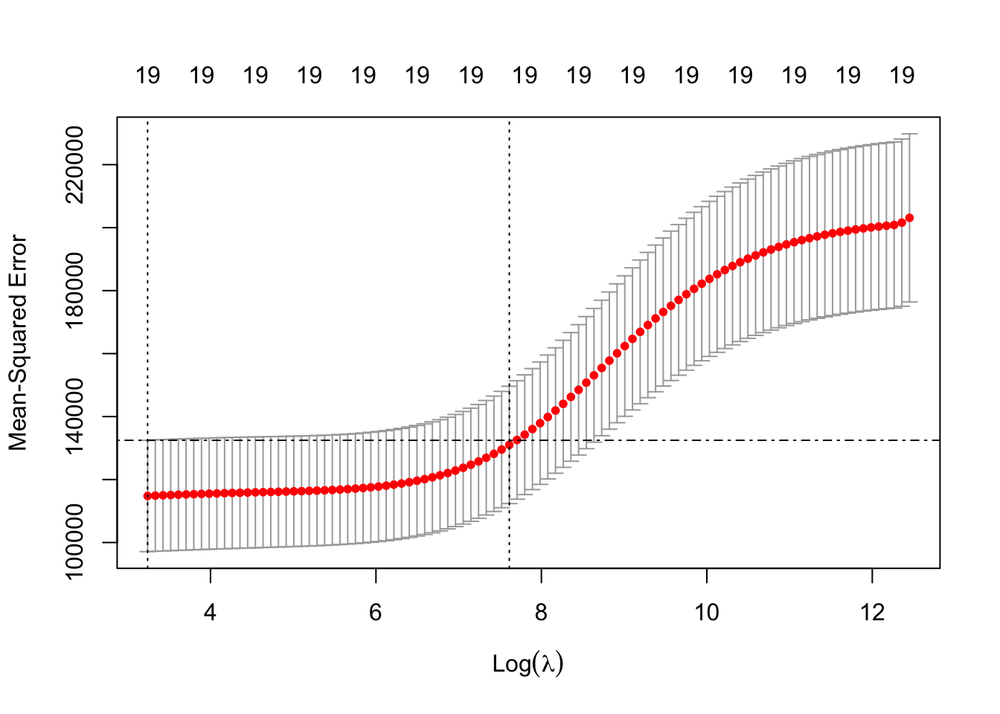
To add these to the plots of coefficients against Log \(\lambda\),
plot(ridge, xvar = 'lambda')
abline(v = log(ridge.cv$lambda.min), lty = 3) # careful to use the log here and below
abline(v = log(ridge.cv$lambda.1se), lty = 3)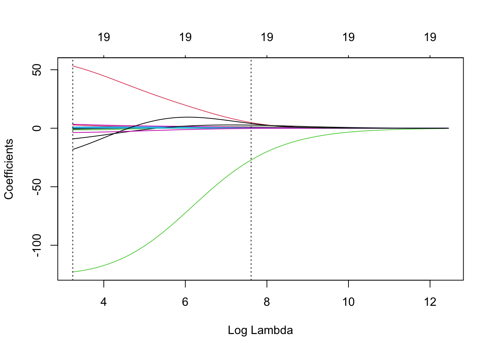
5.1.2 Comparing Predictive Performance For Different \(\lambda\)s
See another example of this method applied to BSS, Ridge, Lasso and PCR at end of this chapter.
repetitions = 50
mse.1 = c()
mse.2 = c()
set.seed(1)
for(i in 1:repetitions){
# Step (i) random data splitting
training.obs = sample(1:263, 175)
y.train = Hitters$Salary[training.obs]
x.train = model.matrix(Salary~., Hitters[training.obs, ])[,-1]
y.test = Hitters$Salary[-training.obs]
x.test = model.matrix(Salary~., Hitters[-training.obs, ])[,-1]
# Step (ii) training phase
lasso.train = cv.glmnet(x.train, y.train)
# Step (iii) generating predictions
predict.1 = predict(lasso.train, x.test, s = 'lambda.min')
predict.2 = predict(lasso.train, x.test, s = 'lambda.1se')
# Step (iv) evaluating predictive performance
mse.1[i] = mean((y.test-predict.1)^2)
mse.2[i] = mean((y.test-predict.2)^2)
}
boxplot(mse.1, mse.2, names = c('min-CV lasso','1-se lasso'),
ylab = 'Test MSE', col = 7)
5.2 Principal Component Analysis
This section contains many examples from practical 3. We use seatpos (38x9 dimension and no missing values) data from faraway package.
library(faraway)To perform principal component analysis without cross-validation, use prcomp() function.
Seperate out response and prediction variables into x and y
y <- seatpos$hipcenter
x <- model.matrix(hipcenter ~ ., seatpos)[,-1]Note that model.matrix(hipcenter ~ ., seatpos)[,-1] is equivalent to seatpos[,-9].
seatpos.pr <- prcomp(x, scale=TRUE)Scaling
- scale = TRUE scales each variable by it’s standard error which is needed for meaningful inference. However, this can also be done manually,
- To manually scale before running prcomp, divide by column standard errors,
s <- apply(x, 2, sd) # calculates the column SDs
x.s <- sweep(x, 2, s, "/") # divides all columns by their SDsExtracting Data
- Variance:
seatpos.pr$sdevgives the standard deviation of each component (seatpos.pr$sdev^2for variance) - Eigenvectors:
seatpos.pr$rotationgives the eigenvectors of each component
These two are equivalent to calling ...$values and ...$vectors on eigen(var(seatpos.s)) where seatpos.s is seatpos manually scaled (alternatively, don’t scale when calling prcom()).
Scree Plots and Proportion of Variance Explained
To manually calculate the proportion of variance each PC explains use,
seatpos.pr$sdev^2 / sum(seatpos.pr$sdev^2 )## [1] 0.7091482088 0.1545982512 0.0579679303 0.0301197935 0.0242774455
## [6] 0.0173967750 0.0062930659 0.0001985298Or can directly read off the summary (including cumulative proportions),
summary(seatpos.pr)## Importance of components:
## PC1 PC2 PC3 PC4 PC5 PC6 PC7
## Standard deviation 2.3818 1.1121 0.68099 0.49088 0.44070 0.3731 0.22438
## Proportion of Variance 0.7091 0.1546 0.05797 0.03012 0.02428 0.0174 0.00629
## Cumulative Proportion 0.7091 0.8638 0.92171 0.95183 0.97611 0.9935 0.99980
## PC8
## Standard deviation 0.03985
## Proportion of Variance 0.00020
## Cumulative Proportion 1.00000This is the information a Scree Plot shows which can be plotted straight from the call to prcomp(),
plot(seatpos.pr)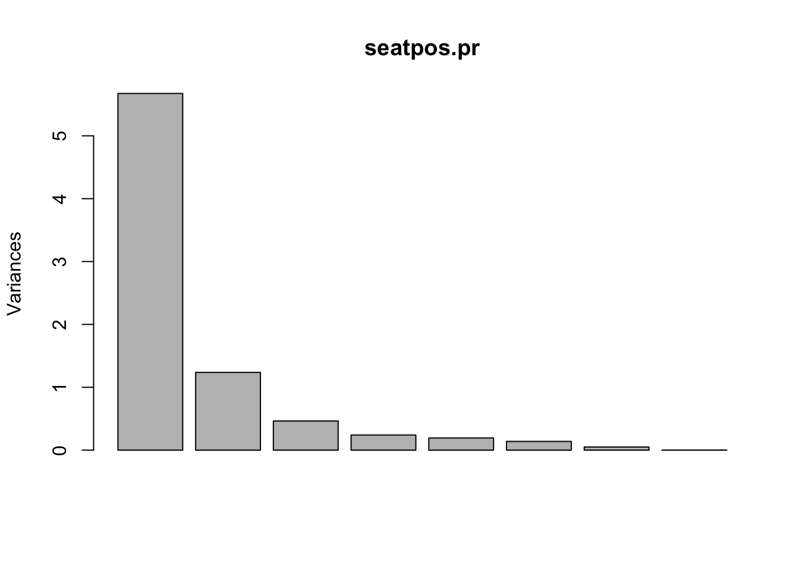
Data Compression (Projection)
Scale data beforehand using manual scaling (see above),
x.s <- sweep(x, 2, apply(x, 2, sd) , "/") #scaled data
seatpos.pr <- prcomp(x.s)Compress data to \(k\) PCs, calculate their means and then reconstruct the data (with error),
T <- t(seatpos.pr$x[,c(1,2,3,4)]) # Compressed using 4 PCs
ms <- colMeans(x.s) # calculates means of scaled data set
R <- t(ms + seatpos.pr$rot[,c(1,2,3,3)]%*% T) # reconstructionplot(rbind(x.s[,1:2], R[,1:2]), col=c(rep(4,38),rep(2,38)))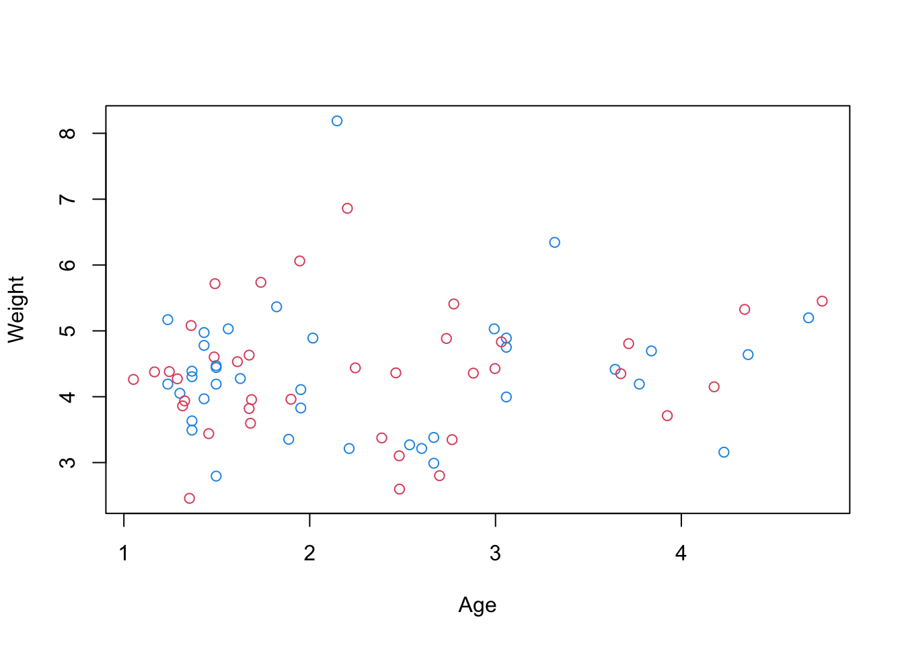
Original data is blue, reconstructions are red
Note: The above only plots two variables, we can plot all pairs using
pairs(rbind(x.s, R), col=c(rep(4,38),rep(2,38))) 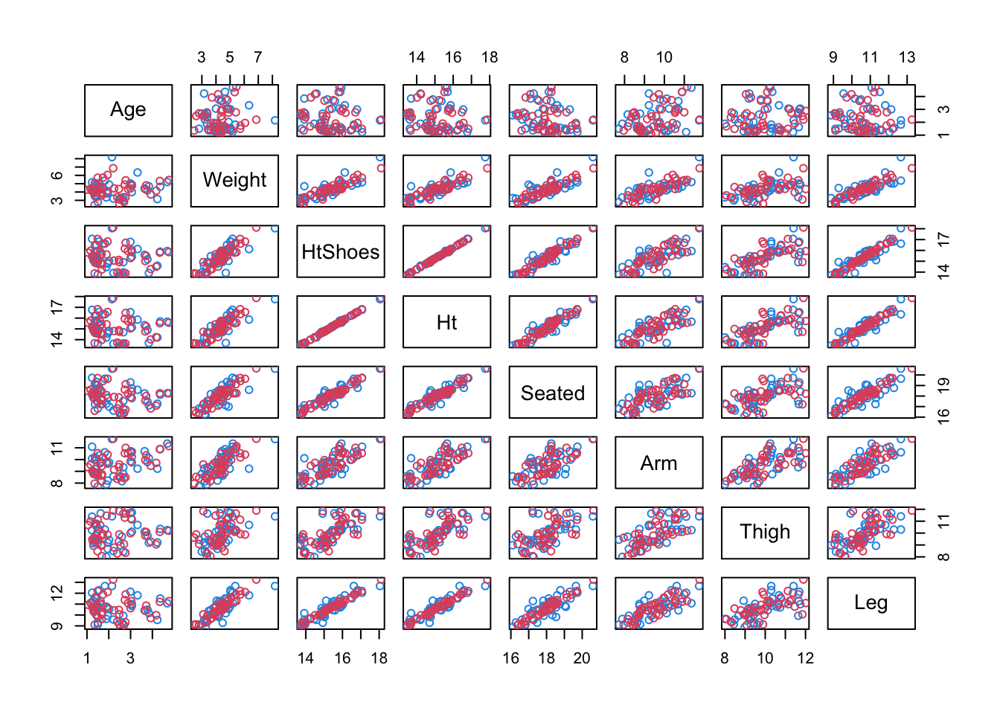
Principal Component Regression
To perform principal component regression we use pls package.
library(pls)PCR is done with the pcr(function). We continue with Hitters data,
pcr.fit = pcr( Salary ~ ., data = Hitters, scale = TRUE, validation = "CV" )
summary(pcr.fit)## Data: X dimension: 263 19
## Y dimension: 263 1
## Fit method: svdpc
## Number of components considered: 19
##
## VALIDATION: RMSEP
## Cross-validated using 10 random segments.
## (Intercept) 1 comps 2 comps 3 comps 4 comps 5 comps 6 comps
## CV 452 352.5 351.6 352.3 350.7 346.1 345.5
## adjCV 452 352.1 351.2 351.8 350.1 345.5 344.6
## 7 comps 8 comps 9 comps 10 comps 11 comps 12 comps 13 comps
## CV 345.4 348.5 350.4 353.2 354.5 357.5 360.3
## adjCV 344.5 347.5 349.3 351.8 353.0 355.8 358.5
## 14 comps 15 comps 16 comps 17 comps 18 comps 19 comps
## CV 352.4 354.3 345.6 346.7 346.6 349.4
## adjCV 350.2 352.3 343.6 344.5 344.3 346.9
##
## TRAINING: % variance explained
## 1 comps 2 comps 3 comps 4 comps 5 comps 6 comps 7 comps 8 comps
## X 38.31 60.16 70.84 79.03 84.29 88.63 92.26 94.96
## Salary 40.63 41.58 42.17 43.22 44.90 46.48 46.69 46.75
## 9 comps 10 comps 11 comps 12 comps 13 comps 14 comps 15 comps
## X 96.28 97.26 97.98 98.65 99.15 99.47 99.75
## Salary 46.86 47.76 47.82 47.85 48.10 50.40 50.55
## 16 comps 17 comps 18 comps 19 comps
## X 99.89 99.97 99.99 100.00
## Salary 53.01 53.85 54.61 54.61Optimal Number of PCs
This is not built in so can be read off from summary above or copy and paste this code,
min.pcr = which.min( MSEP( pcr.fit )$val[1,1, ] ) - 1
min.pcr## 7 comps
## 7MSE Validation Plot
validationplot( pcr.fit, val.type = 'MSEP' )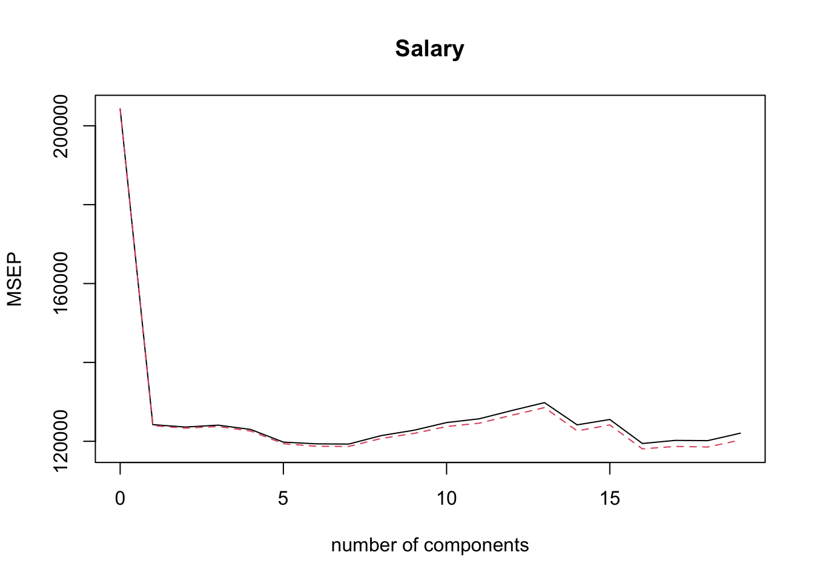
Coefficients of Optimal Number of PCs
coef(pcr.fit, ncomp = min.pcr)## , , 7 comps
##
## Salary
## AtBat 27.005477
## Hits 28.531195
## HmRun 4.031036
## Runs 29.464202
## RBI 18.974255
## Walks 47.658639
## Years 24.125975
## CAtBat 30.831690
## CHits 32.111585
## CHmRun 21.811584
## CRuns 34.054133
## CRBI 28.901388
## CWalks 37.990794
## LeagueN 9.021954
## DivisionW -66.069150
## PutOuts 74.483241
## Assists -3.654576
## Errors -6.004836
## NewLeagueN 11.401041Similarly, familiar functions like predict can also be used on pcr.fit and has an ncomp parameter.
Regularisation Path Plots
Full explanation of code is at the end of section 7.6.
coef.mat = matrix(NA, 19, 19)
for(i in 1:19){
coef.mat[,i] = pcr.fit$coefficients[,,i]
}
plot(coef.mat[1,], type = 'l', ylab = 'Coefficients',
xlab = 'Number of components', ylim = c(min(coef.mat), max(coef.mat)))
for(i in 2:19){
lines(coef.mat[i,], col = i)
}
abline(v = min.pcr, lty = 3)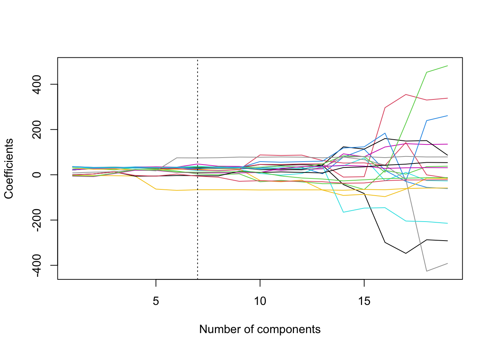
Scree Plots with PCR (manually)
PVE <- rep(NA,19)
for(i in 1:19){ PVE[i]<- sum(pcr.fit$Xvar[1:i])/pcr.fit$Xtotvar }
barplot( PVE, names.arg = 1:19, main = "scree plot",
xlab = "number of PCs",
ylab = "proportion of variance explained" )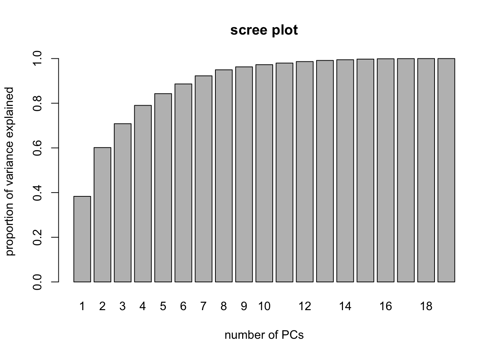
5.3 Comparing Predictive Performances
Example for practical 3. Uses leaps, pls and glmnet packages and we’re give we want to split data training:test as 28:10.
We also need to include predict.regsubsets from chapter 4.
predict.regsubsets = function(object, newdata, id, ...){
form = as.formula(object$call[[2]])
mat = model.matrix(form, newdata)
coefi = coef(object, id = id)
xvars = names(coefi)
mat[, xvars]%*%coefi
}We want to calculate the correlation and MSE for the four models BSS (\(C_p\)), Ridge (5 folds CV), Lasso (5 fold CV) and PCR over 50 repetitions.
cor.bss = c()
cor.ridge = c()
cor.lasso = c()
cor.pcr = c()
mse.bss = c()
mse.ridge = c()
mse.lasso = c()
mse.pcr = c()
for(i in 1:repetitions){
# Step (i) data splitting
training.obs = sample(1:38, 28)
y.train = seatpos$hipcenter[training.obs]
x.train = model.matrix(hipcenter ~ ., seatpos[training.obs, ])[,-1]
y.test = seatpos$hipcenter[-training.obs]
x.test = model.matrix(hipcenter ~ ., seatpos[-training.obs, ])[,-1]
# Step (ii) training phase
bss.train = regsubsets(hipcenter ~ ., seatpos, nvmax = 8)
min.cp = which.min(summary(bss.train)$cp)
ridge.train = cv.glmnet(x.train, y.train, alpha = 0, nfold=5)
lasso.train = cv.glmnet(x.train, y.train, nfold=5)
pcr.train = pcr(hipcenter ~ ., data = seatpos[training.obs,],
scale = TRUE, validation = "CV" )
min.pcr = which.min(MSEP(pcr.train)$val[1,1, ] ) - 1
# Step (iii) generating predictions
predict.bss = predict.regsubsets(bss.train, seatpos[-training.obs, ], min.cp)
predict.ridge = predict(ridge.train, x.test, s = 'lambda.min')
predict.lasso = predict(lasso.train, x.test, s = 'lambda.min')
predict.pcr = predict(pcr.train, seatpos[-training.obs, ], ncomp = min.pcr )
# Step (iv) evaluating predictive performance
mse.bss[i] = mean((y.test-predict.bss)^2)
mse.ridge[i] = mean((y.test-predict.ridge)^2)
mse.lasso[i] = mean((y.test-predict.lasso)^2)
mse.pcr[i] = mean((y.test-predict.pcr)^2)
cor.bss[i] = cor(y.test, predict.bss)
cor.ridge[i] = cor(y.test, predict.ridge)
cor.lasso[i] = cor(y.test, predict.lasso)
cor.pcr[i] = cor(y.test, predict.pcr)
}We can then compare with boxplots
boxplot(mse.bss, mse.ridge, mse.lasso, mse.pcr, names = c('BSS','Ridge','Lasso','PCR'),
ylab = 'Test MSE', col = 2:5)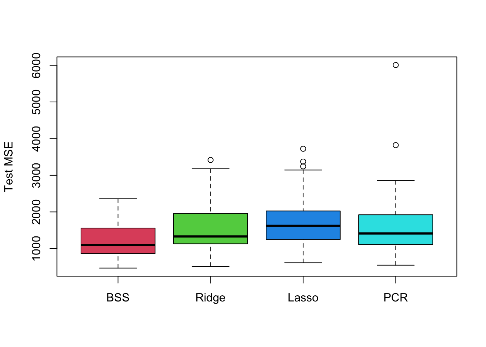
boxplot(cor.bss, cor.ridge, cor.lasso, cor.pcr, names = c('BSS','Ridge','Lasso','PCR'),
ylab = 'Test Correlation', col = 2:5)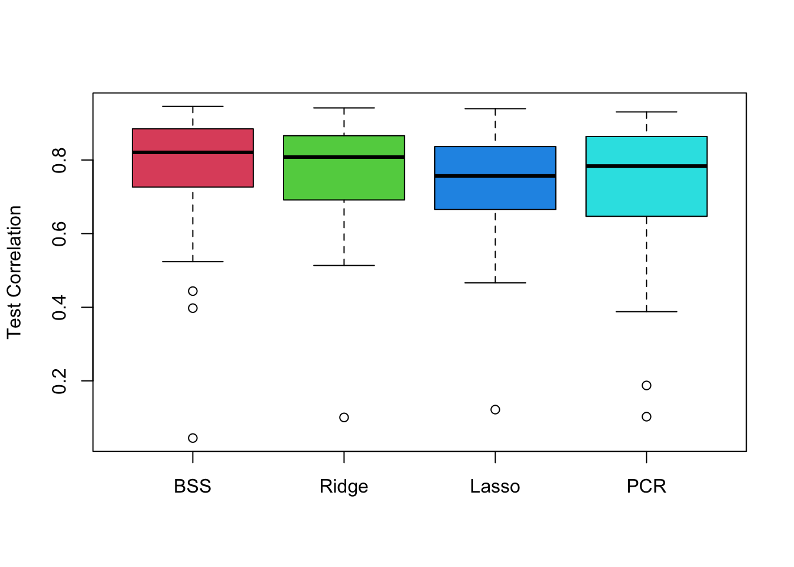